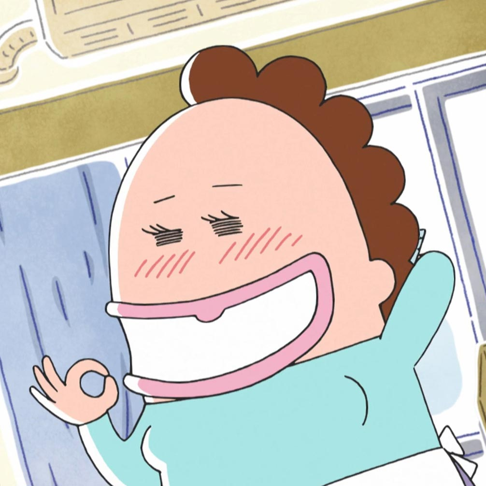

Work in Progress!!!
I'm currently rewatching all of my favorites so that I can form a better opinion of them. I haven't gotten around to rewatching many shows and writing recommendations for them yet.
I'm currently rewatching all of my favorites so that I can form a better opinion of them. I haven't gotten around to rewatching many shows and writing recommendations for them yet.

Welcome to my personal list of recommended anime!
This list will server as my resource to send to others when they ask me what anime I would recommend to them. This list is purely in alphabetical order, so it doesn't represent how much I like a certain series relative to the others nearby it.
My taste is more centered towards comical and funny things, but I always enjoy drama and action, especially when it's well-mixed with comedy. If you feel that you'd like to give my taste a try, go ahead and keep track of this page so you can check on it later (I most likely will update this list when I watch things I would recommend to others). If that's not your taste, however, feel free to click away.
Know this: for most series that make it on this list, I have watched them at least twice for the sake of having a good opinion and making a good recommendation. The text accompanying each entry is not a comprehensive review; it mainly highlights the underlying aesthetics I enjoyed while watching the show for. It's for you to gauge whether or not you would enjoy the show.
Rest assured, thus, that none of these shows will be subpar.
My list is seperated into 3 ranks. These ranks group shows based on the uniqueness and how much it feels like a cardinal anime. What a "cardinal anime" is, I honestly cannot explain, but, as you watch more anime, you should develop an understanding as to what cardinal anime would be.
Rank S (for Super) is the rank where the series is unique and amazing on an exceptional level, where it feels completely unlike common anime. If you're looking for something amazing, something that elevates the medium unlike no other class of anime, sample from this rank.
Rank A contains shows that are unqiue to a high level, but still reflect some level of being like common anime. These shows elevate the medium pretty well while sticking closer to how anime normally is. This is the rank to pick from if you're looking for something to help you get into anime.
Rank B consists of the shows that, while being from "okay" to "pretty good", feel a very big bunch like regular anime. Depending on how your taste goes, these are the shows that may classify to you as "subpar". You should probably wait until you're at least a little versed with anime to start watching from this rank.
This seperation is only on a matter of how much the show sticks to common anime. It's not too much based on how much I liked the show, because I enjoyed all the shows in this list.
Click on an entry's image to open the repsective anime's MAL (MyAnimeList) page.
Click on the entry's header to reload the image.
Click on the chain-link next to an entry's header to change the url to one that scrolls to the clicked entry (navigting to a fragment identifier).
Without further ado, I hope you enjoy the anime I present in this list.
I care a big whole bunch about anime, and I honestly care more about getting people into anime (and easing them into tolerating its cardinal gimmicks) than about perpetuating an elitist sort of ideal.
That's why I've seperated my list into these sections: to cater to those who are new to anime and those who have experience.
If anything, this section contains the better of my favorite anime. I'd honestly like to show people the best stuff than to show them just about anything.
If you have no experience with anime but want an absolute killer of a show, refer to this section here.
Kintaro Oe is the Golden Boy. Physically and mentally healthy, this young lad strolls around Japan to learn about life.
But enough about premises; a premise alone does not make a show great, especially not as great as this.
Golden Boy is a great show not because of its plot or premise, but for the more important things (to me, with this show in mind) such as its humor and animation. The jokes are all visual, and the faces, the timing, and the voice actor's work, all do well to make each joke funny. The animation on its own is expressive, something unlike anything you'd often see today.
As great as this show is, mind the fact that it's an adult show. With episodes 1, 4, and 5 being the most sexual, each episode's plot revolves around Kintaro ending attracting a lady at the place he's working at.
On the note of warnings, I'd prefer going with the Japanese dub of this show. As amazing a job that Dough Smith does when performing Kintaro, all of the other voice actors (particularly the females) don't really express the same personality as what I feel the character's were intended to be portrayed as. (Feel free to call me a weeaboo for this next one, but...) The American voices don't have the same subtleties as the Japanese voices that would communicate a Japanese maiden or a devious, two-faced high school girl.
Golden Boy is a 6-episode OVA series. Licensed by Discotek Media for North America in 2012, this is the place from which you'd purchase the DVD.
To me, this show ranks an S. It's great—no, wait, it's pretty amazing, deserving of being among the S rank—but there's better up here.
In here are going to be shows that, while they are exceptional, reflect common anime by a substantial amount.
You know how a large amount of anime take place in high school, and how they're a comedy and/or slice-of-life show? Well this is where it was good. This is Azumanga Daioh—a show from a time where high school comedy and slice-of-life was done well.
Azumanga Daioh is one of those shows to watch if you want to get to know a cast over a time-frame, where you witness the funny happenings, and come to enjoy their personalities—and the humor that comes from it. And the humor... lord almighty it is some ; the things that the producers do—like the bits where they pause really long for a joke, or when they animate movements really slowly to eccentuate just how bizzare something is, and not to mention the way the sound design—always helps the jokes' deliveries. A show like this is an amazing comedy to me. This show isn't always a straight-up comedy, either; it is also sometimes more like a laidback slice-of-life. Vacations at Chiyo's summer home, their yearly school festivals, study sessions at Chiyo's house, all of that works together to deliver that social and peaceful highschool experience I'm sure you and I both never had. Having a continuity where you get to know the characters over times does well to make the ending great. It does so well, in-fact, that I was a little sad to have finished this series.
This show also has an amazing opening theme and ending theme.
Also, did you know that this show is the origin of the term "waifu"?
Azumanga Daioh is available through Sentai Filmworks.
From me this show earns an A++. It is one of the best—if not the best— comedy/slice-of-life shows I have seen. To me, it places even higher than Nichijou.
Kill Me Baby is a comedic anime that adapts from a yonkoma comic. This means that you can expect much out of the comedy, which Kill Me Baby delivers exceptionally. While the show starts off a bit weak (so weak, in fact, that I initially dropped the show), it really gets better the further and further you get. The jokes, while maybe not "funny", are exectuted so well—this is due to the voice actors, animation, and sound working all together amazingly—that I end up laughing harder than I would with any other media. Aside from a few exceptions near the late portions of the series (which are most likely a result of a low budget), the timing of exposure to the parts of a joke are done very well. Sometimes, though, there are times when the joke is sort of ruined whenever they point out the focus of the punchline of a joke, especially if you had already gotten the joke without the pointer.
I also wanted to comment on how the soudntrack, especially the ending theme, is pretty nice. The BGM parts sport some tracks that are perhaps not worthy of listening to as regular music, but certainly do their jobs as background-music very well.
There's only the 13 episodes and some OVA. Sentai Filmworks has licensed the series in North America, so here is where you can purchase the series (does not include the OVA).
Some trivia: the voice of Arigi in this series, Ai Takabe, was arrested for drug posession. This completely obliterates any chance of this series haivng a second season.
This show gets an A+ from me. While it still feels like regular anime, and while the budget cuts had detrimented the show by a tiny bit, the humor honestly brings this show up very highly.
While the title suggests a story of simple, everyday school life, the contents are more the opposite. The setting is a strange school where you may see the principal wrestle a deer or a robot's arm hide a rollcake. However there are still normal anecdotes, like making a card castle or taking a test you didn't study for. All of this contributes to make this show half comedy and half slice-of-life
If you're into comedy and are into the comfortable, enjoyable slice-of-life feel, Nichijou is worth watching.
This show is only licensed in Australia by Madman, so, unless you're fine with the hassle of imports and such, your best bet to acquire this anime is to torrent it.
This show gets a solid A++ to me. This is very much unlike normal anime—in fact, the only thing it has related with common anime is that it's in a high-school setting—and the humor is grade-A.
This section is only seperating anime in terms of how much you might enjoy it based on how much anime you've watched before.
These qualities that bring up the need for seperation, however, are not qualities that make anime "better" in any way; they are just qualities that one would perhaps not undertsand so well if they were not versed in anime.
If anything, this section would perhaps be the lesser group of my favorite anime, because these series, while good, base themselves a little more closely with the cardinal gimmicks of anime.
If you're into anime, and you understand the general antics that come with anime, such as the "moe", and anime's other cardinal sins, then this section is right down your alleyway.
If you haven't watched much anime before, and you don't understand the general environment, then it's perhaps better that you don't choose any of these anime down here as your first to watch.
GJ-bu is a harem anime sans the ecchi. The main dude, Kyolo, is the only male character to appear in this show, while the rest are females. Despite the ways Kyolo is sometimes playfully abused and belittled by the girls, each of the other characters' actions (except for one) all reflect the fact that they actually like Kyolo. The bottom line is that this show appeals to a male's sense of being appreciated. The point of the show is for you (as a male) to "fall in love" with the other characters, and fantasize about being in Kyolo's position.
Currently, GJ-bu is not available for purchase, and can only be stramed through crunchyroll.
You could call this my most shameless recommendation...
I give GJ-bu a B+. The show very much reflects common anime (being a slice-of-life, taking place in high school, appealing this way to the viewer) but I honestly enjoy my sense of being appreciated being appealed to (take from that what you will in regards to my personality). If you're up for being pandered to, take this show on.

I hope you like my taste!